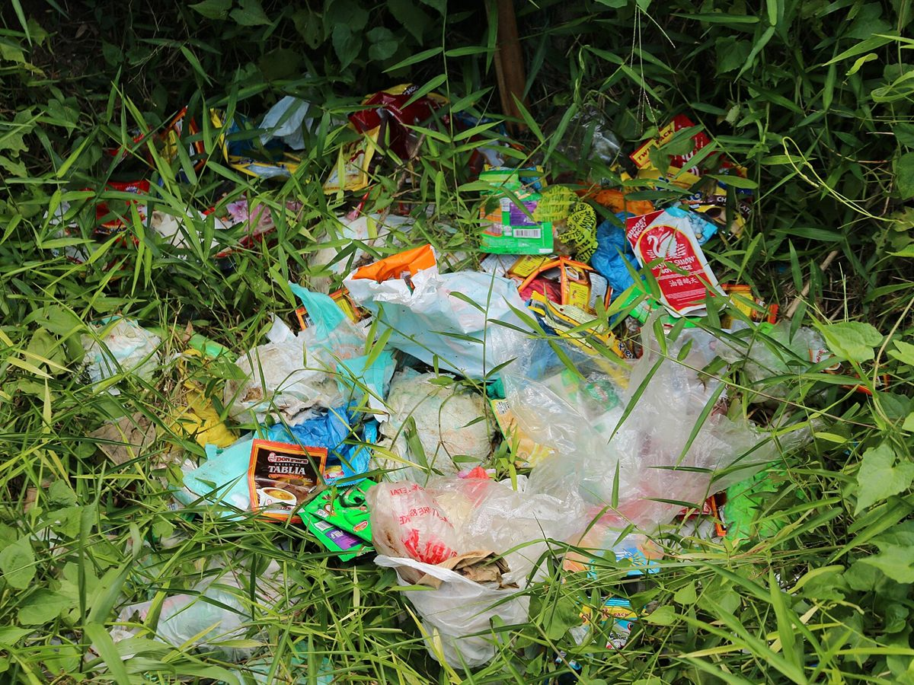

Sachet economyEkonomiyang sachet
CritiqueKritika
Affordable today, plastic waste for a long time after.Abot-kaya ngayon, basurang plastik nang matagal pagkatapos.
Small packs make goods affordable today, but the bigger pack can cost less per unit, and every sachet becomes plastic waste.Abot-kaya ang maliliit na pakete ngayon, pero minsan mas mura bawat yunit ang mas malaki, at nagiging basurang plastik ang bawat sachet.
Ang sasagutin ng kwentong itoWhat this story answers
- Does a sachet really cost more per gram than a bigger pack?Talaga bang mas mahal bawat gramo ang sachet kaysa sa mas malaking pakete?
- Where do the empty sachets end up?Saan napupunta ang mga gamit nang sachet?
- Who profits most from selling in small packs?Sino ang pinakakumikita sa pagbebenta nang maliliit na pakete?
Walk along a sari-sari store and you will see them hanging in strips: shampoo, coffee, detergent, soy sauce, all in sachets small enough to buy with a few coins. Sachets are what make a product affordable today.Maglakad sa harap ng sari-sari store at makikita mo silang nakasabit nang hanay-hanay: shampoo, kape, sabong panlaba, toyo, lahat nasa sachet na kayang bilhin ng ilang barya. Dahil sa sachet, abot-kaya ang isang produkto ngayon.
Does a small pack cost more for the same amount? The evidence is mixed. A P&G executive interviewed for a 2011 study said, “The bigger the size, the lower the price per unit, but then the tradeoff is it would be more expensive in terms of cash outlay.” In a 2025 government price bulletin, a 25 g coffee refill cost ₱21.60 and a 50 g refill ₱42.20: about ₱0.86 a gram against ₱0.84. But a 2013 newspaper column found six 10 ml shampoo sachets (60 ml) at ₱29.25 while the 670 ml bottle cost ₱378, which makes the sachets the cheaper ones per milliliter (about ₱0.49 against ₱0.56). So a sachet is not always the worse deal per gram. It is the deal a family with a few coins can afford.Mas mahal ba ang maliit na pakete para sa parehong dami? Halo-halo ang ebidensya. Sinabi ng isang executive ng P&G na nakapanayam sa isang pag-aaral noong 2011, “The bigger the size, the lower the price per unit, but then the tradeoff is it would be more expensive in terms of cash outlay.” Sa isang price bulletin ng gobyerno noong 2025, ₱21.60 ang 25 g na coffee refill at ₱42.20 ang 50 g: mga ₱0.86 bawat gramo laban sa ₱0.84. Pero sa isang kolum sa diyaryo noong 2013, ₱29.25 ang anim na 10 ml na sachet ng shampoo (60 ml) habang ₱378 ang 670 ml na bote, kaya mas mura pa ang mga sachet bawat mililitro (mga ₱0.49 laban sa ₱0.56). Kaya hindi palaging mas lugi ang sachet bawat gramo. Ito ang kayang bilhin ng pamilyang may ilang barya lang.
Then there is what is left behind. GAIA, an environmental network, estimated in 2019 that Filipinos throw away about 164 million sachets a day, close to 60 billion a year, based on household waste audits. GAIA’s 2020 report describes sachets as difficult to recycle and costly for cities to manage. They are light, they slip away from collection, and they clog drains and pollute waterways. Every sachet that makes a day easier becomes a piece of waste that lasts far longer.Nariyan din ang naiiwan. Tinantya ng GAIA, isang pangkalikasang network, noong 2019 na mga 164 milyong sachet ang itinatapon ng mga Pilipino araw-araw, halos 60 bilyon bawat taon, batay sa mga waste audit ng mga tahanan. Inilalarawan ng ulat ng GAIA noong 2020 ang mga sachet bilang mahirap i-recycle at magastos pangasiwaan ng mga lungsod. Magaan ang mga ito, nakakatakas sa koleksyon, bumabara sa mga kanal at nagpaparumi sa mga daluyan ng tubig. Bawat sachet na nagpapagaan sa isang araw ay nagiging basurang mas matagal na nananatili.
So who benefits? Small packs let companies sell to buyers who could not pay for a big one. GAIA’s Miko Aliño says corporations “have greatly benefited from these products” without being held accountable for the pollution. The tindera earns a small margin on each pack. The family pays for convenience, and the neighborhood lives with the waste. We are not blaming the person who buys a sachet, because the price tag decides the choice. We are asking why a system works this way.Kaya sino ang nakikinabang? Dahil sa maliliit na pakete, nakakapagbenta ang mga kompanya sa mga mamimiling hindi kayang bumili ng malaki. Sinabi ni Miko Aliño ng GAIA na ang mga korporasyon ay “have greatly benefited from these products” nang hindi pinananagot sa polusyon. Kumikita nang kaunti ang tindera sa bawat pakete. Nagbabayad ang pamilya para sa kaginhawaan, at ang kapitbahayan ang namumuhay kasama ng basura. Hindi namin sinisisi ang taong bumibili ng sachet, dahil ang presyo ang nagpapasya ng pagpili. Itinatanong namin kung bakit ganito tumatakbo ang sistema.
About 164 million sachets are thrown away in the Philippines every day.Mga 164 milyong sachet ang itinatapon sa Pilipinas araw-araw. (GAIA, 2019)

“Mura nga, pero saan napupunta ’yung plastic?”
PinagkunanSources
Global Alliance for Incinerator Alternatives. (2019, March 7). Plastics Exposed: How Waste Assessments and Brand Audits are Helping Philippine Cities Fight Plastic Pollution, Table 7.
Liamzon, C., Benosa, S., Aliño, M., & Baconguis, B. (2020, July). Sachet Economy: Big Problems in Small Packets. GAIA.
Philippine Department of Trade and Industry. (2025, February 1). Suggested Retail Prices of Basic Necessities and Prime Commodities (coffee refill entries).
Alano, C. M. (2013, February 5). The battle between the bottle and the sachet. The Philippine Star.
Sy-Changco, J. A., Pornpitakpan, C., Singh, R., & Bonilla, C. M. (2011). Managerial insights into sachet marketing strategies and popularity in the Philippines. Asia Pacific Journal of Marketing and Logistics, 23(5), 755–772. https://doi.org/10.1108/13555851111183129
Page 5 / 5Pahina 5 / 5